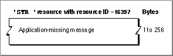

The Application-Missing Message String
When your application creates a document that your application uses but that the user cannot open (such as a preferences file), your application should set the creator of the document to a registered signature that is not the same as your or anyone else's application, and include an application-missing message string in the resource file of the document. The application-missing name string is a resource with the resource type'STR ', it must have a resource ID number of -16397, and it must be made purgeable. The string resource should contain a message that explains why the user cannot open or print the document, as explained in "Displaying Messages When the Finder Can't Find Your Application" beginning on page 7-25.If you examine a compiled application-missing message string, as illustrated in
Figure 7-29, you find that it consists entirely of a Pascal string that explains why the
user cannot open the document. The Finder displays this string in an alert box if the user tries to open or print a document that is given a special creator that is not used as a signature by any application file. (File creators and application signatures are explained in "Giving a Signature to Your Application and a Creator and a File Type to Your Documents" beginning on page 7-7.)Figure 7-29 Structure of a compiled application-missing message string resource
